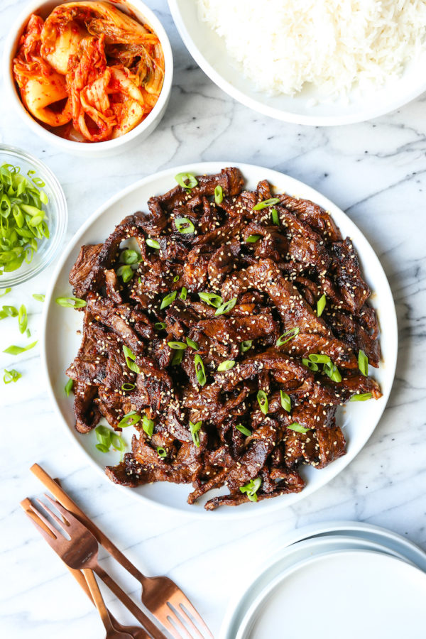

Home
Bulgogi

Bulgogi, literally "fire meat", is a gui made of thin, marinated slices of beef or pork grilled on a barbecue or on a stove-top griddle. It is also often stir-fried in a pan in home cooking. Sirloin, rib eye or brisket are frequently used cuts of beef for the dish.
Ingredients
- 1 1/2 pounds boneless rib eye stead
- 1 1/2 small pear, peeled and coarsely grated
- 1 1/4 cup reduced sodium soy sauce
- 2 tablespoons brown sugar
- 2 tablespoons toasted sesame seed oil
- 3 cloves garlic, minced
- 1 tablespoon gochujang
- 2 tablespoons vegetable oil, divided
- 2 green onions, thinly sliced
- 1 teaspoon toasted sesame seeds
Directions
- Wrap steak in plastic wrap, and place in the freezer for 30 minutes. nwrap and slice across the grain into 1/4-inch thick slices.
- In a medium bowl, combine pear, soy sauce, brown sugar, sesame oil, garlic, ginger and gochujang. In a gallon size Ziploc bag, combine soy sauce mixture and steak; marinate for at least 2 hours to overnight, turning the bag occasionally.
- Heat 1 tablespoon vegetable oil in a cast iron grill pan over medium-high heat.* Working in batches, add steak to the grill pan in a single layer and cook, flipping once, until charred and cooked through, about 2-3 minutes per side. Repeat with remaining 1 tablespoon vegetable oil and steak.
- Serve immediately, garnished with green onions and sesame seeds, if desired.